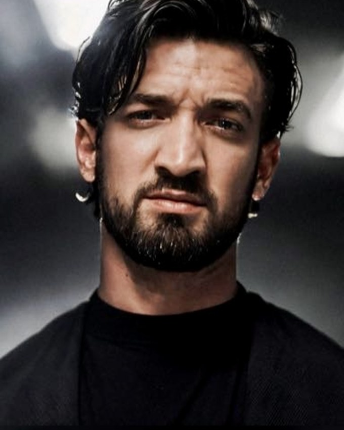

Operations, techniek, software en AI komen bij mij samen. Ik hou ervan om te begrijpen hoe iets werkt, waar het vastloopt en hoe het slimmer kan.

Mijn achtergrond loopt van professionele keukens en automotive tot productie, operations, IT, AI en automatisering.
Wat die werelden voor mij gemeen hebben: processen begrijpen, problemen oplossen, verantwoordelijkheid nemen en zorgen dat het eindresultaat werkt.
Vandaag combineer ik die operationele ervaring met technologie: lokale AI-systemen, workflow automation, softwareontwikkeling en embedded hardware.
Workflow automation, lokale LLM's, agents en slimme koppelingen tussen systemen.
Experimenteren, prototypes bouwen en softwareprojecten structureren.
Lokale infrastructuur, virtuele machines, netwerken en development environments.
Software koppelen aan fysieke systemen, sensoren en elektronica.
Dagelijkse ondersteuning en coördinatie binnen een productieomgeving. Aansturen van medewerkers, opvolgen van productie, organiseren van werkzaamheden en oplossen van operationele en technische problemen.
Werken binnen een internationale productieomgeving met sterke aandacht voor kwaliteit, procedures en efficiëntie.
Praktische ervaring met voertuigonderhoud, mechanische werkzaamheden, diagnose en techniek.
Operationele ondersteuning binnen een gespecialiseerde technische omgeving.
Professionele keukenervaring met verantwoordelijkheid, organisatie, snelheid en werken onder druk.
Een eigen omgeving om software repositories automatisch te analyseren, begrijpen en beheren — met lokale AI, zonder cloud.